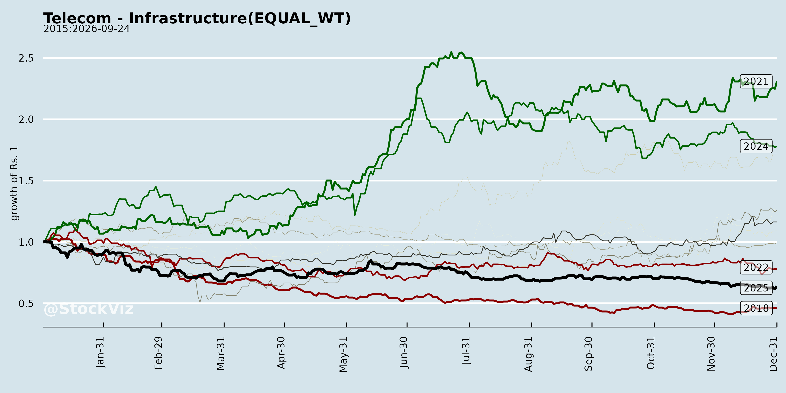
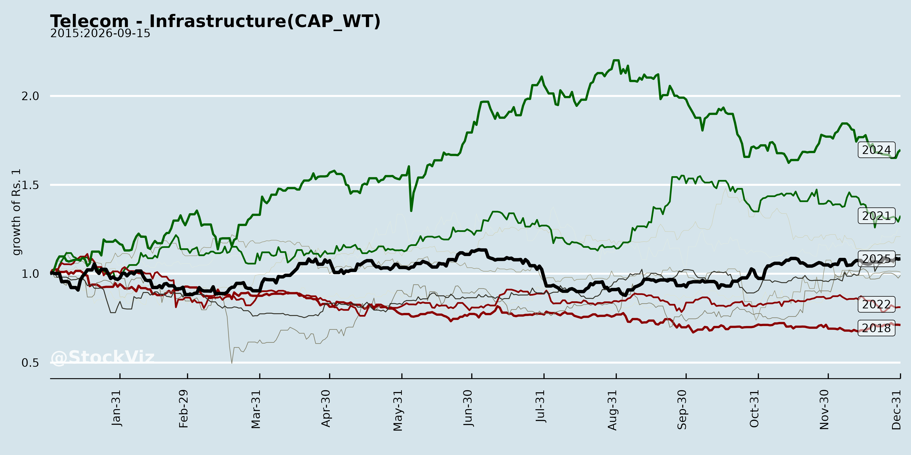
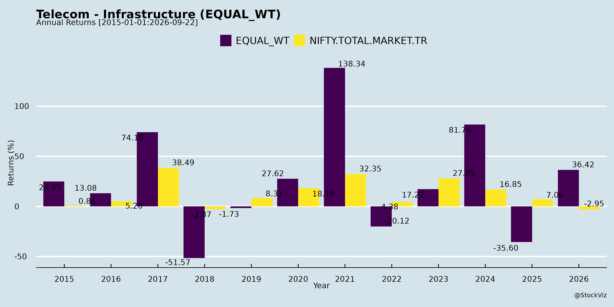
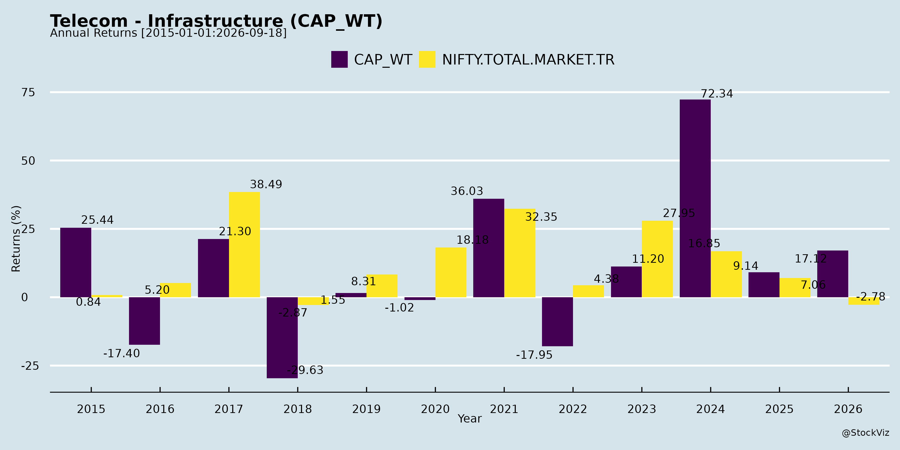
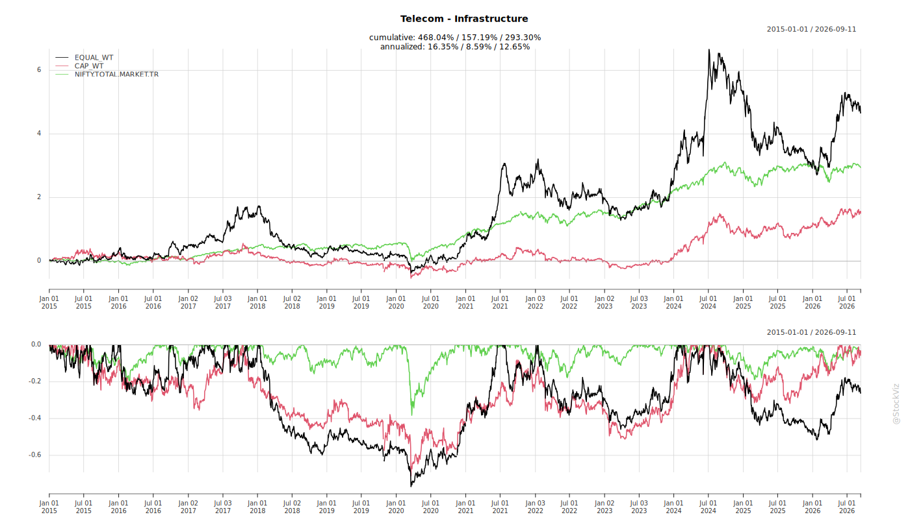
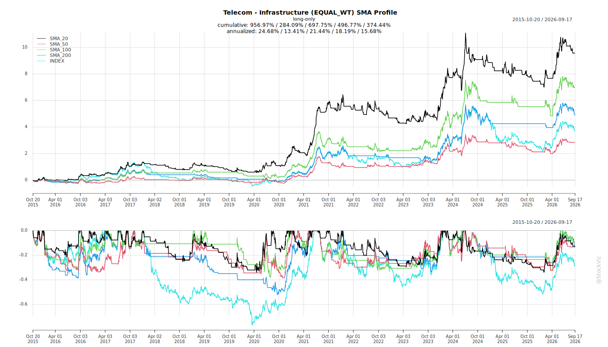
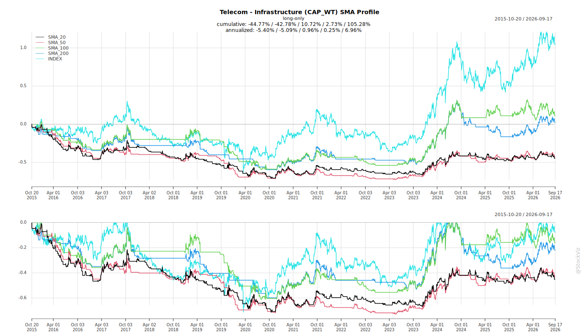
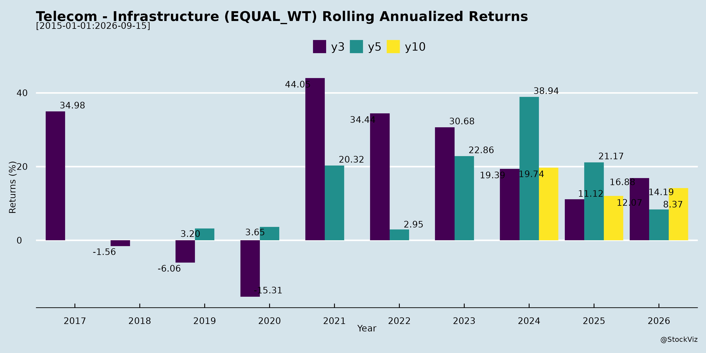
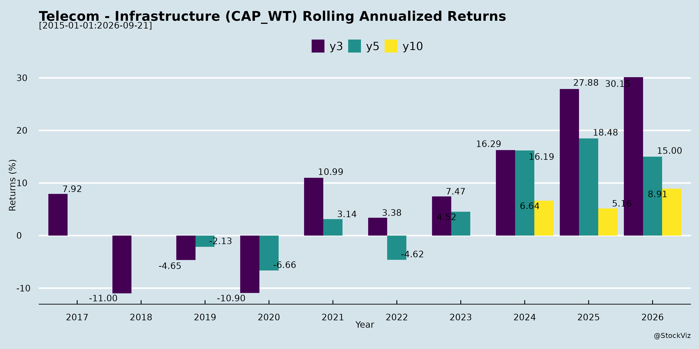

asof: 2025-11-27
Indian Telecom Infrastructure Sector Analysis
Based on the provided documents (HFCL’s investor meet intimation, Indus Towers’ analyst meet schedule, and Suyog Telematics’ detailed Q2/H1 FY26 earnings transcript), the analysis focuses on the towerco/IP-1/fibre sub-segment. Suyog’s insights dominate, reflecting mid/small-cap dynamics amid large players like Indus Towers and equipment firms like HFCL. The sector shows resilience with 5G/fibre tailwinds but govt/PSU delays as key friction.
Tailwinds (Positive Drivers)
Headwinds (Challenges)
Growth Prospects
Key Risks
| Risk Category | Description | Mitigation (from Docs) |
|---|---|---|
| Execution/Operator Delay | BSNL integration 3-4 months; tender slips (e.g., Oct → Dec). | Pre-CapEx (702 sites ready); promoter/bank funding aligned. |
| Funding/CapEx | INR600cr+ for BSNL 6k sites (total debt to INR250cr @9.5% interest); H1 cash flow dip (advances/loans to INR35cr). | INR150cr bank sanction +INR22cr promoter + accruals (funds 3k sites); phased rollout. |
| Revenue Concentration | Top-2 >60%; BSNL lowers tenancy (stable INR25-27k). | Diversify (fibre/inorganic); upgrades offset. |
| Competition/Policy | BSNL shortlists 4-5 players; govt processes slow. | Suyog strong (L1 in MTNL; strategic bidding). |
| Macro | Rainy seasons; telco CapEx cuts (Q2 examples). | Balanced portfolio (macro/small cell/fibre). |
Summary
Bullish Outlook with Phased Execution: Tailwinds from 5G (Airtel), VI revival, BSNL rural push outweigh headwinds like delays/low BSNL realizations. Growth hinges on FY26 H2 (INR140cr revenue via 1k+ tenancies, upgrades, fibre), scaling to FY27 doubling. Risks center on BSNL execution/funding (high probability but 1-2q slippage). Sector stable (4 operators, govt support); Suyog’s 75%/30% margins resilient. Monitor Dec’25 BSNL LOI for catalysts. Net: Positive (High Growth Potential, Medium Risk).
asof: 2025-11-27
Summary Analysis: Indian Telecom Infrastructure Sector
The Indian telecom infrastructure sector, exemplified by key players like Indus Towers (largest towerco with 256k towers, 416k co-locations), GTL Infrastructure (deleveraging), HFCL (ESG-rated), and Pace Digitek (telecom + BESS hybrid), shows robust fundamentals driven by 5G rollout and data demand. Q2/H1 FY26 financials indicate resilience amid moderated growth, with tailwinds from policy support and tech upgrades outweighing headwinds like declining sharing factors. Growth prospects are strong (projected 9-10% revenue CAGR), but risks center on execution and competition.
Tailwinds (Positive Drivers)
Headwinds (Challenges)
Growth Prospects
Key Risks
| Risk Category | Details | Mitigants |
|---|---|---|
| Operational | Execution delays (Pace: 40/75 MSEDCL sites FY26); high capex (Indus ₹69B FY25). | Strong orderbook, MSAs; backward integration (Pace containers). |
| Financial | Debt/leases (Indus ₹165B net debt); WC stretch (Pace DSO high, net WC ₹970Cr). | Deleveraging (Indus cash positive sans leases); IPO funds (Pace ₹630Cr capex). |
| Market/Competition | Sharing factor decline; BESS pricing wars (₹1.7L/MW bids unsustainable). | Product control (Pace mfg.); 5G demand. |
| Regulatory/External | RoW delays, EMF norms; cell imports (50-60% cost, forex risk). | Policy tailwinds; back-to-back pricing (Pace). |
| Macro | Fuel volatility; tariff hikes absent (ARPU boost via plan changes). | Energy efficiency (solar/low-diesel). |
Overall Outlook: Sector poised for 10-15% CAGR FY26-28 on 5G/BESS tailwinds; Indus/Pace exemplify stability/growth. Monitor sharing factor and BESS bids for near-term volatility. Positive deleveraging (GTL) signals recovery. Recommendation: Bullish with cautious execution watch.
asof: 2025-11-27
Indian Telecom Infrastructure Sector Analysis
Based on recent disclosures from HFCL Limited (investor meeting intimation), Indus Towers Limited (analyst meet schedule), and Suyog Telematics Limited (Q2 & H1 FY26 earnings transcript), the sector shows robust activity amid 5G rollouts, BSNL expansion, and telco stabilization. These inputs highlight tower deployments, fiber projects, and investor engagement by key players. Below is a structured analysis of headwinds, tailwinds, growth prospects, and key risks.
Tailwinds
Headwinds
Growth Prospects
Key Risks
Summary: The sector benefits from 5G tailwinds, BSNL revival, and VI stability, driving tenancy growth to 15k+ for players like Suyog by FY27 and FY26 revenue targets of INR250cr+. EBITDA margins resilient at 75%, but headwinds like delays and BSNL dilution cap per-tenancy realization at INR25-27k. Key to watch: BSNL order closure (Dec’25), debt execution, and H2 deployments. Overall positive with balanced risks, positioning infra for multi-year expansion.
asof: 2025-11-27
Indian Telecom Infrastructure Sector Analysis
Based on recent disclosures from key players (HFCL, Indus Towers, Pace Digitek, Suyog Telematics, Vindhya Telelinks) covering Q2/H1 FY26 results, orders, acquisitions, and strategic updates.
Tailwinds (Supportive Factors)
Headwinds (Challenges)
Growth Prospects
Key Risks
Overall Summary: The sector exhibits resilience with revenue tailwinds from infra demand/exports/defence, but faces profitability headwinds from costs/delays. Growth prospects are strong (15-20%+ CAGR potential via 5G/renewables/global), supported by policy and consolidation. Risks center on liquidity/geo-macro factors—mitigable via diversification/efficiency. Positive outlook for FY26, with HFCL/Indus as bellwethers.
Copyright © 2023 SAS Data Analytics Pvt. Ltd. All rights reserved.